01
Agrivoltaics
Splitting the spectrum between panels and plants: from planar spectral beam-splitters for open-field farms to AI that steers autonomous agrivoltaic arrays through the day.
Crop Intelligence & Research for Climate-smart Agricultural Systems
CIRCAS designs agrivoltaic and controlled-environment systems where crops and clean power share one beam of light, engineered, sensed, and modeled from the panel down to the leaf.
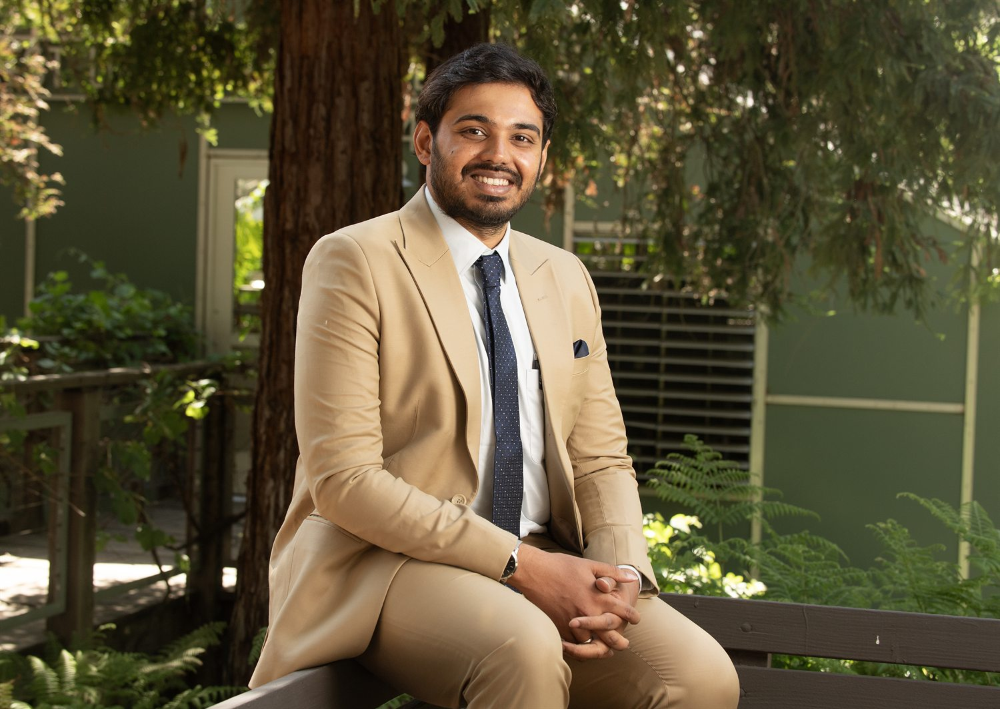
A mechanical engineer who fell for plants, and now builds the systems where the two disciplines meet.
Trained through a Ph.D. in Mechanical Engineering at NC State, I spent years engineering semitransparent organic solar cells that let a greenhouse generate its own electricity while the crops beneath still thrive. That question became my research program: how do you divide one photon budget between a harvest and a kilowatt-hour?
Today, as Assistant Professor of Plant Science and a CEMaST Faculty Scholar at Cal Poly Pomona, my lab works across agrivoltaics, controlled-environment agriculture, and precision remote sensing. We build real hardware, sensor it heavily, and wrap it in energy–water–plant models that tell growers what to do next.
Every project shares one idea: treat sunlight, water, and land as a shared budget, then engineer the system that spends it best.
Splitting the spectrum between panels and plants: from planar spectral beam-splitters for open-field farms to AI that steers autonomous agrivoltaic arrays through the day.
Net-zero-energy greenhouses roofed in semitransparent organic solar cells, balancing crop yield against on-site power, validated with genomics and global techno-economics.
Automated hydroponic and microgreen systems on a custom-built controller: IoT-sensed, energy-aware, and designed for the city.
Drones, GIS, and handheld crop sensors turning strawberry fields and orchards into daily data.
Physics-based models of photosynthesis, greenhouse climate, and water recovery: the decision layer over every system we build.
Behind every system is a real person deciding how to spend a scarce resource: a beam of light, an acre of land, a kilowatt of power. We build the tools that help them decide.
Keep land in production and add clean power on the same acre, with field-validated numbers on exactly what yield trades for what energy.
Drive the energy bill toward net-zero by turning the roof itself into a power source, without giving up the crop underneath.
Grow reliable local food in cities and on marginal land with automated, energy-aware controlled-environment systems.
Train students on the drones, sensors, and models that modern sustainable agriculture actually runs on, hands-on from week one.
Five elevated monofacial solar arrays over working crop beds, powering the grid while lettuce grows in their shade.
At Cal Poly Pomona's Spadra Farm, we run replicated trials of leafy greens beneath tracker-mounted panels, measuring exactly how much yield we trade for how much energy. Flagged plots, drip lines, and drone flights turn the whole array into a dataset: the field counterpart to the spectral beam-splitting work in the lab.
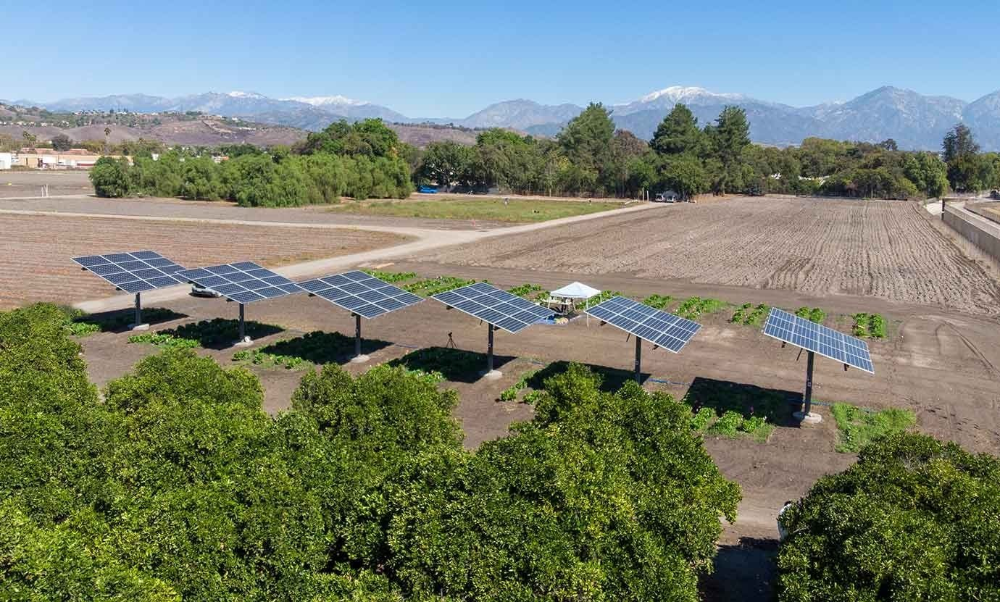
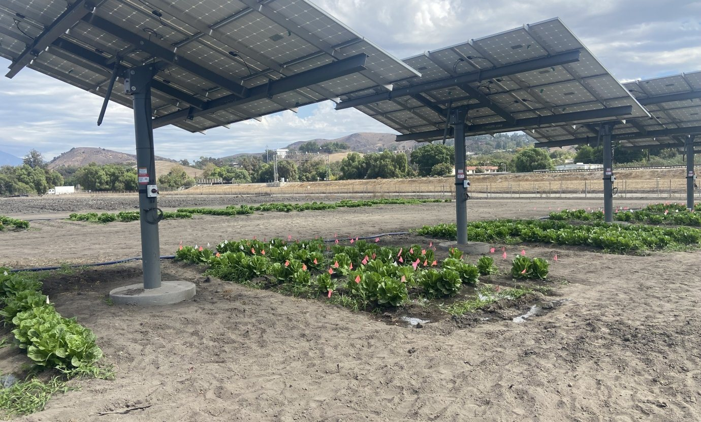
We build indoor grow systems that sense, decide, and act, down to the milliliter of nutrient.
Our controlled-environment platform pairs a custom-designed Raspberry Pi hydroponic controller board with an open-source Mycodo stack. It reads pH, EC, CO₂, temperature, and VPD on a 30-second cadence, then drives a phase-gated flood-and-drain cycle, climate control, and automated pH and nutrient dosing: the same framework re-tuned for microgreens, lettuce, and mushrooms. Students use it to run real crop trials and defend theses on the data it logs.
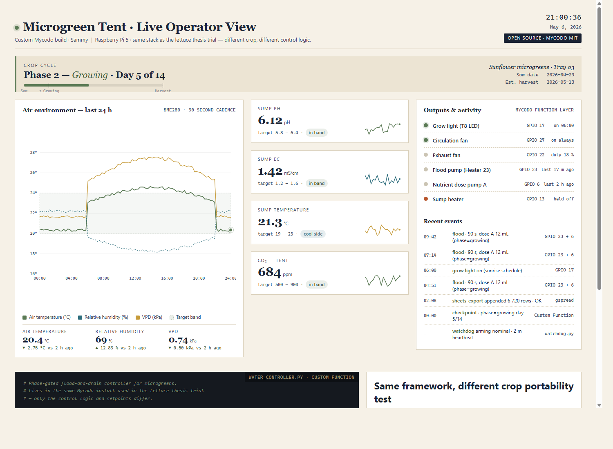
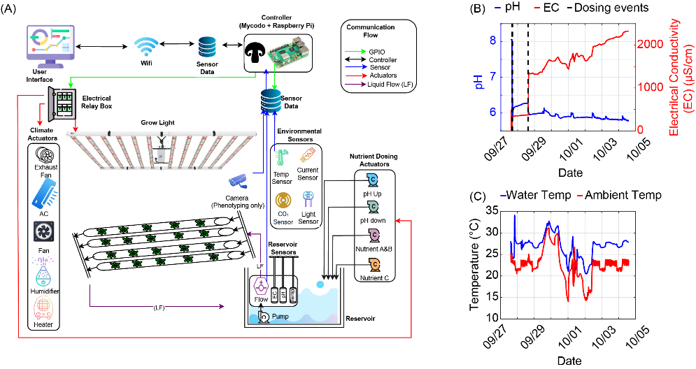
Benchmarking Spectrum-Splitting Agrivoltaics Using Spectrally Resolved Ray-Tracing and Crop Modeling for Yield–Microclimate–Energy Balance Across Arid and Humid Climates
Ravishankar, E., Vitoshkin, H., Kribus, A., Mittelman, G., Rozenstein, O., Hernández, R.
Agrivoltaics Can Add Value to High Tunnels in a Subtropical Environment
Field, R., Abernathy, B., Ravishankar, E., Cassity-Duffey, K., Vaughn, J.
Achieving Net-Zero-Energy Greenhouses by Integrating Semitransparent Organic Solar Cells
Ravishankar, E., Booth, R.E., Sederoff, H., Ade, H.W., O'Connor, B.T.
Organic Solar-Powered Greenhouse Performance Optimization and Global Economic Opportunity
Ravishankar, E., et al.
Balancing Crop Production and Energy Harvesting in Organic Solar-Powered Greenhouses
Ravishankar, E., Charles, M., Sederoff, H., Ade, H.W., O'Connor, B.T.
Genomic Analysis Reveals Emergent Traits of Crops Grown Under Semitransparent Organic Solar Cells
Charles, M., Edwards, B., Ravishankar, E., et al.
Environmental and Economic Impacts of Solar-Powered Integrated Greenhouses
Hollingsworth, J.A., Ravishankar, E., O'Connor, B.T., Johnson, J.X., DeCarolis, J.F.
Economic Potential of Open-Field Agrivoltaics with Planar Spectral Beam Splitting
Mittelman, G., Atiya, V., Vitoshkin, H., Hernández, R., Ravishankar, E., Kribus, A.
The lab is bringing seven oral presentations to the American Society for Horticultural Science Annual Conference, led by our graduate and undergraduate researchers. If you'll be there, come talk agrivoltaics, controlled-environment ag, and machine learning with us.
Interpretable Support Vector Machine Modeling Identifies Environmental–Physiological Disease Transition Zones in Tomato
Carson Green presenting · with Corrales, Mattia, Kosaraju & Ravishankar
Machine Learning-Based Crop Recommendation Using Environmental and Edaphic Variables: A Comparative Analysis of Random Forest, SVM, and Neural Network Classifiers
Sai Chandra Kosaraju presenting · with Cao, Le, Green, Mattia & Ravishankar
Evaluating the Predictive Limits of Environmental Variables for Plant Disease Detection and Health Monitoring Using Machine Learning
Sai Chandra Kosaraju presenting · with Le, Cao, Corrales, Green, Mattia & Ravishankar
Seasonal Yield and Physiological Response of Romaine Lettuce Under Fixed-Tilt Agrivoltaics in a Semi-Arid System
Megan Kelly presenting · with Kuhn, Connelly, Campbell Freire, Duong, Briceno, Fox, Cesena Olivas & Ravishankar
Beyond Mean Yield: Machine Learning Reveals Within-Plot Uniformity as a Key Classifier of Agrivoltaic Lettuce Production
Areesha Imtiaz presenting · with Kelly, Kuhn, Connelly, Campbell Freire, Duong, Briceno, Fox, Cesena Olivas, Kosaraju & Ravishankar
Fixed-Tilt Agrivoltaic Panels Restructure Soil Fungal Communities and Enrich Plant-Pathogenic Genera in a Semi-Arid Romaine Lettuce System
Areesha Imtiaz presenting · with Kelly, Kuhn, Connelly, Campbell Freire, Duong, Briceno, Fox, Cesena Olivas & Kosaraju
Integrating Low-Cost Adaptive Nutrient Control with Time-Series Modeling to Improve Growth Prediction and Resource Efficiency in Indoor and Greenhouse Lettuce Production
Gerardo Gutierrez presenting · with Mattia, Kosaraju & Ravishankar
My courses put drones, Raspberry Pi sensors, live crops, and real data in students' hands from week one.
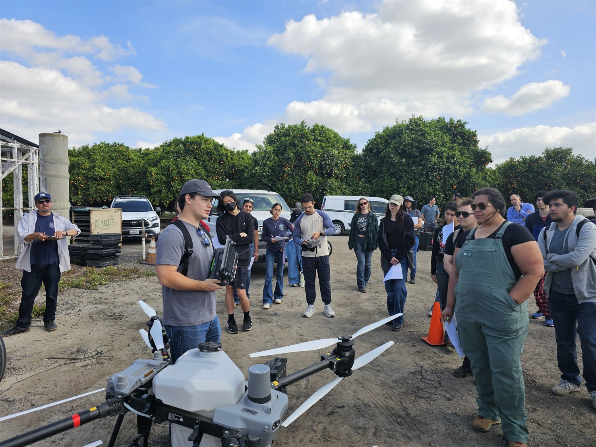
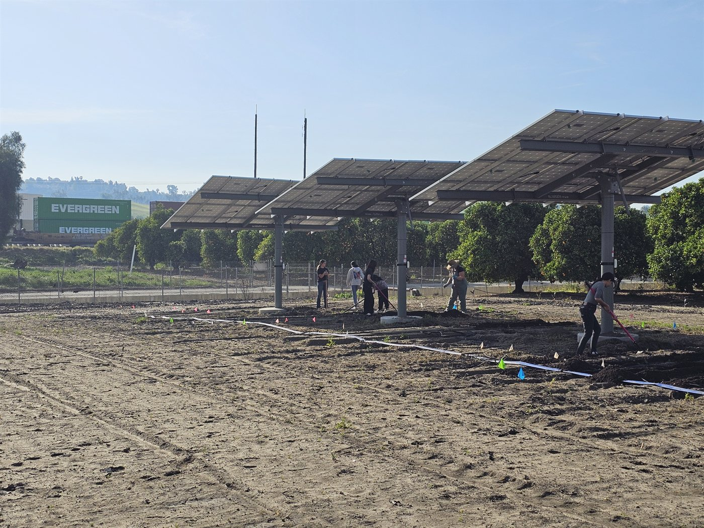
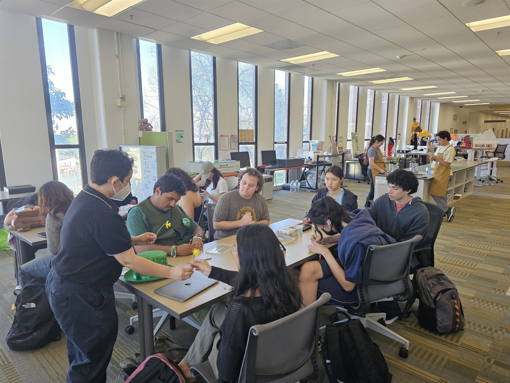
Introductory plant biology paired with a hands-on lab: students seed, grow, and measure crops in hydroponic and vertical-farm systems and take leaf gas-exchange readings out at Spadra Farm.
Precision agriculture, remote sensing, IoT, and AI. Students build Raspberry Pi crop sensors, run GPS/GIS and LANDSAT/NDVI mapping, and complete a real project at the AgriScapes farm.
Mushroom cultivation from fungal ID to fruiting, with IoT climate control and automation. Students build a small-scale production system and pitch it to Southern California growers.
A graduate stats course rebuilt around the modern Python stack: experimental design, regression, growth curves, and machine learning on real agricultural datasets.
A new course launching soon: FAA Part 107 remote-pilot preparation and turning multispectral and thermal drone imagery into agronomic decisions.
Two of these courses, PLT 3020 and PLT 4210, earned Cal Poly Pomona's PolyX polytechnic-signature-experience designation for their build-and-operate design, and the lab's instructional work has twice been backed by SPICE classroom-innovation awards.
An interactive teaching tool I built: students adjust light, CO₂, and temperature and watch a live photosynthesis model respond. Free to use in class.
Engineers, biologists, and builders who like to make things grow. Here's who you'd be working alongside.
Mechanical engineer turned plant scientist; builds the systems where food and energy meet.
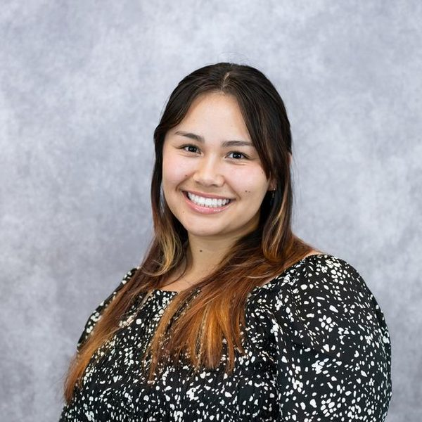
Plant Science · Spadra Farm agrivoltaics.
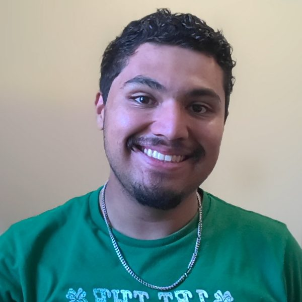
Mechanical Engineering · Spadra Farm agrivoltaics.
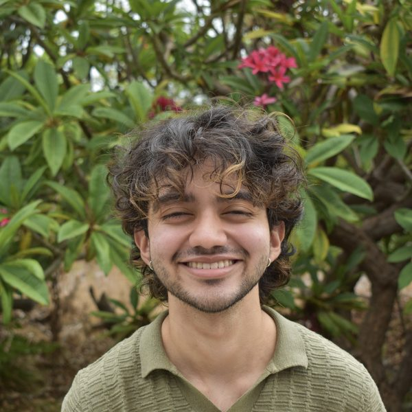
Mechanical Engineering, minor in Computer Science · AgriScapes greenhouses. Oscar Perlaza President's Scholar.
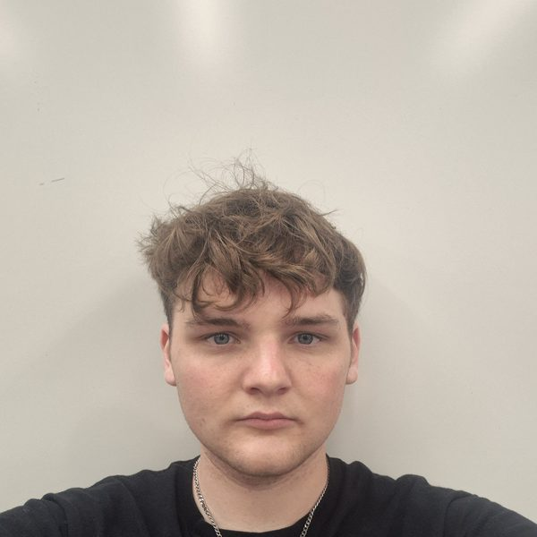
Computer Science · AgriScapes greenhouses.
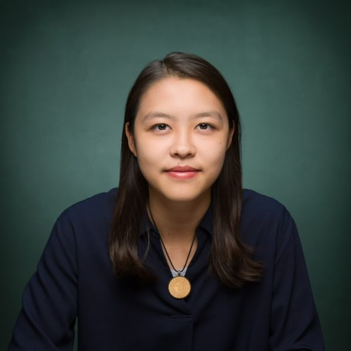
Plant Science · Spadra Farm agrivoltaics.
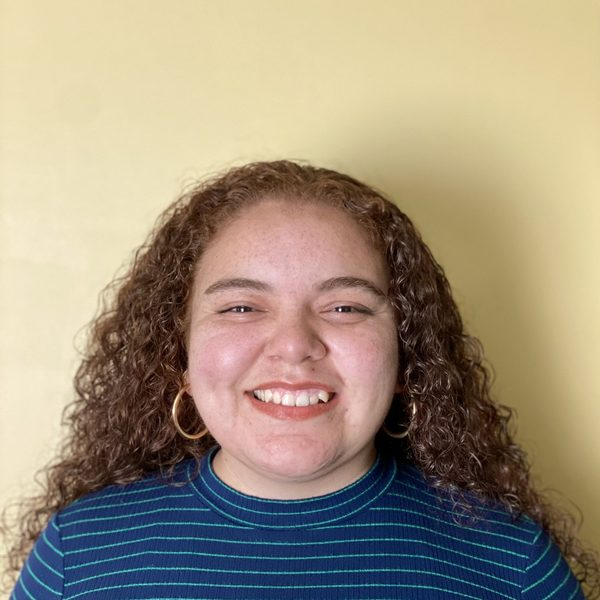
B.S. Plant Science · AgriScapes greenhouses.
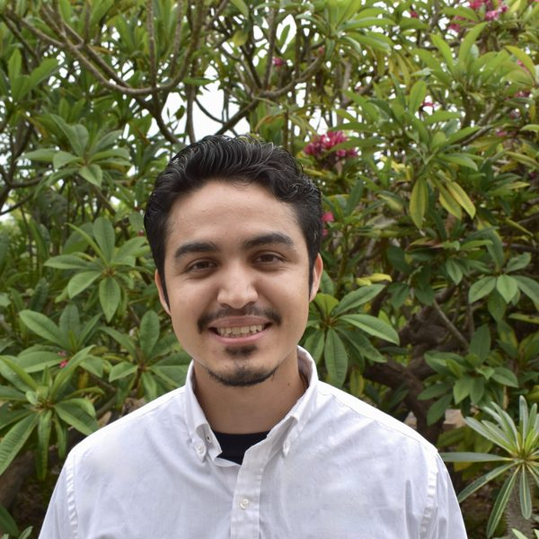
B.S. Plant Science · AgriScapes greenhouses.
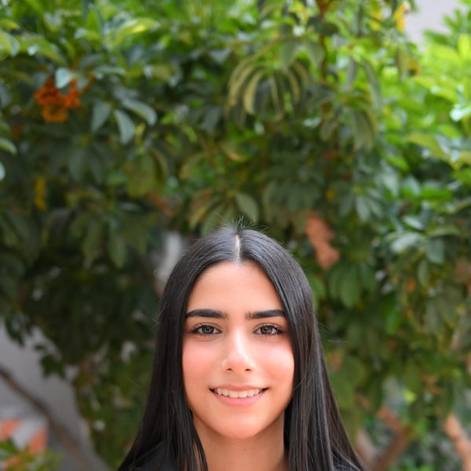
B.S. Computer Science · agrivoltaic machine learning; ASHS 2026 speaker.
Papers, grants, and milestones as they happen. Send me your latest talks, awards, and new members to keep this current.
I mentor students who like to build things that grow. Whether you come from engineering, biology, computer science, or the soil itself, there's a bench for you.